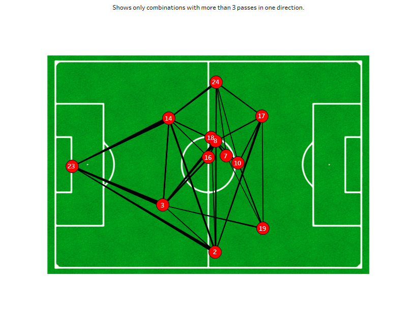

Team Pass Network
A visual representation of passing connections between players in a match — showing how a team links up on the ball, which players act as key connectors, and how possession flows through the lineup.

Overview
A pass network maps how a team's players connect with each other during a match. Each player is a node positioned at their average location on the pitch, and each edge between nodes represents the volume of passes exchanged between two players. The result is a structural picture of how a team's possession game is organised.
Built for the AFCON Final, this project uses Statsbomb event data to compute all successful pass connections and render them as a weighted network overlay on a football pitch.
What the Network Reveals
- Key Connectors: Players with the highest number of strong connections (thick edges) are the team's central passing hubs — often the deepest midfielder or the most active fullbacks in possession build-up.
- Isolated Players: Players with few or thin connections may be operating in isolation, asked to receive the ball in advanced positions rather than participate in build-up — often wide forwards or target strikers.
- Team Shape in Possession: The spatial layout of the network reveals how wide or narrow a team plays in possession, and whether their shape is flat or staggered vertically through the thirds.
Technical Implementation
Pass Event Extraction
All successful passes between starting players are extracted from Statsbomb event data. Each pass is recorded with passer, recipient, and the location coordinates of both players.
Network Construction
Pass counts between each player pair are aggregated into a weighted adjacency matrix. Only connections above a minimum threshold are visualised to reduce noise.
Pitch Rendering
mplsoccer renders player nodes at average positions, with edge width proportional to pass volume. Tableau provides an interactive version allowing filtering by match period and player.
Explore the Project
View the interactive dashboard or browse the code on GitHub.